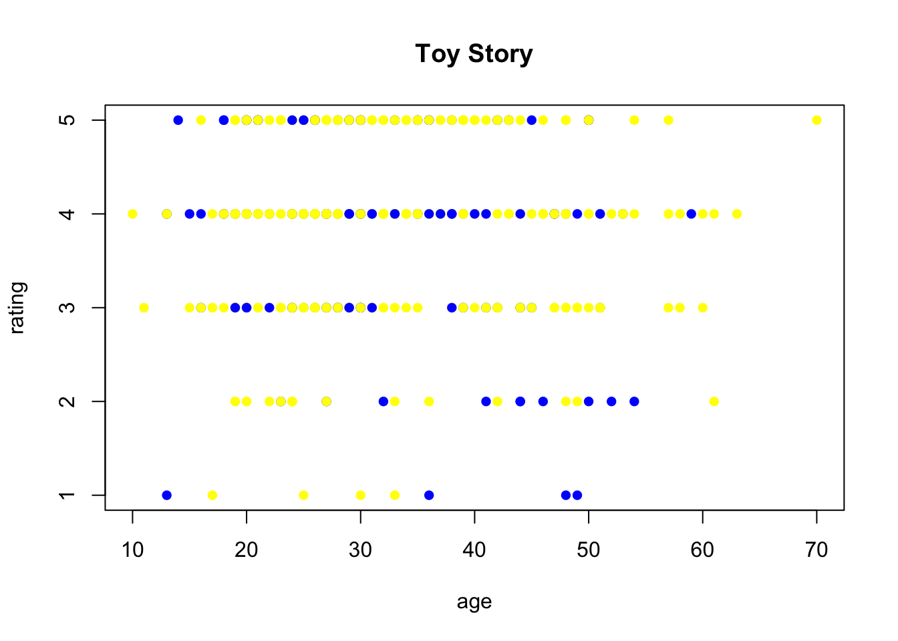
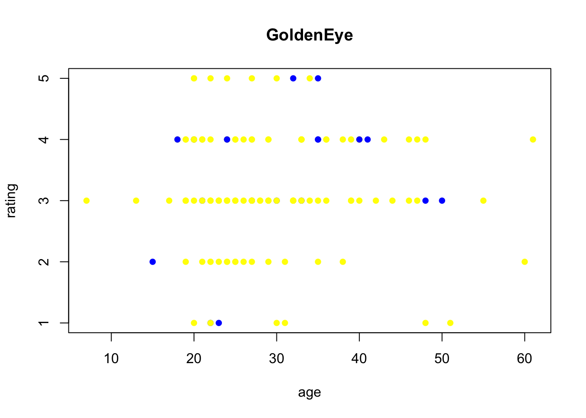

Chapter 2 The Movie Lens Data (Example)
2.1 Background
MovieLens (http://grouplens.org/datasets/movielens/) is a movie recommendation engine devel- oped and administered by a research group at the University of Minnesota. It is very much like the ones included in Netflix and elsewhere, but free and open. The latest release of the data includes 20,000,000 individual ratings of 27,000 movies by 138,000 users.
For this exercise, we are using (most of) the much smaller, 1998 release, which includes 100,000 ratings, of 1700 movies by nearly 1000 users. The data included on the class website is modified slightly from the original. Specifically, we have:
- added informative column names, which were not included in the original data files, but described in a separate readme file
- removed a couple of columns, including a timestamp indicating when the rating was made
- changed | delimited files to tab delimited,
- removed 2 movies of unknown genre,
- removed duplicate entries for a handful of movies that are included in the database twice.
It should be noted that some movie names are duplicated, when two different films happen to have the same name, or when a movie is remade at a later date. Name and year together make a unique identifier in these cases.
There are 4 data files in the course folder:
- The ratings themselves are found in ratingsData.txt, one rating per line. Users and movies are labeled by random, numerical IDs in the ratings data.
- A separate movieData.txt file links the numerical movieID to title, year, and genre.
- The userData.txt file provides basic demographics for each user, including age, gender, occupation and 1zipcode.
- A fourth file ratingsDataPlus.txt combining limited information from all 3 files is provided as well for your convenience.
2.2 Goal
To break the ratings for each movie down by user characteristics.
2.3 Data
The first step will be to read in the data.
userDat <- read.table("Data/userData.txt",
header = T, row.names = 1, as.is = T,
sep = "\t", fill = T)
movieDat <- read.table("Data/movieData.txt",
header = T, row.names = 1, as.is = T,
sep = "\t", quote = "")
ratingsDat <- read.table("Data/ratingsData.txt",
header = T, as.is = T, sep = "\t")After reading all 3 files into R, you will want to think about how you organize and store the data for analysis. Do your data objects all have useful row and column names so that you can easily map movies and users across all data sets? Do you like having the ratings data in a 3 column format, would a matrix make more sense? Are you happy having everything in 3 separate files? The format used in the ratingsDataPlus.txt file, may make it easier to work with the data for some problems. There are trade-offs no matter how its done, though, combining the files may make it easier to write code for analyses, but it uses a lot of storage space - the ratingsPlus file alone is more than 3 times as large as the other 3 files combined.
Logically, data organization comes before analysis, but its not always possible to anticipate your needs in advance, so you are likely to add things to this section as you go.
## make a matrix of ratings
## maybe it will be helpful to have a simple list of movie ids
mov <- rownames(movieDat)
## and a simple list of user ids
usr <- rownames(userDat)
## start with all na's in the matrix
ratMat <- matrix(rep(NA, length(mov) * length(usr)),
nrow=length(mov)) #
## add row and col names
rownames(ratMat) <- mov
colnames(ratMat) <- usr
## and fill it up with ratings
for (i in 1:dim(ratingsDat)[1]) {
n_r <- as.character(ratingsDat[i,2])
n_c <- as.character(ratingsDat[i,1])
ratMat[n_r, n_c] <- ratingsDat[i,3]
}
## here is a list of all possible genre names
genres <- colnames(movieDat)[7:20]The age data is numerical, but it might be useful to divide it into groups for some applications. First I looked at a summary of ages
summary(userDat$age)## Min. 1st Qu. Median Mean 3rd Qu. Max.
## 7.00 25.00 31.00 34.05 43.00 73.00It is decided that <25, 25-35, 35 - 45 and 45-75 would produce reasonably large age groups.
ageGp <- rep(75, dim(userDat)[1])
ageGp[userDat$age<=45] <- 45
ageGp[userDat$age<=35] <- 35
ageGp[userDat$age<=25] <- 25
summary(ageGp)## Min. 1st Qu. Median Mean 3rd Qu. Max.
## 25.0 25.0 35.0 42.1 45.0 75.02.4 Analysis
There are lots of different things we can do here. Here is a function that takes a movie name as argument and plots age on the x-axis vs ratings on the y-axis. Color is used to specify gender.
### put in the movieID as argument
ratingsPlot <- function(movID,
genderCol = c("M" = "yellow", "F" = "blue")) {
## get the real movie name
name <- movieDat[movID,"name"]
## get the list of users who rated that movie
raters <- colnames(ratMat)[!is.na(ratMat[movID,])]
plot(userDat[raters,"age"], ### need ages for those users
ratMat[movID,raters], ### need ratings for those users
pch = 16,
col = genderCol[userDat[raters,"gender"]], ### need gender
main = name, xlab = "age", ylab = "rating")
}
ratingsPlot(rownames(ratMat)[1])
ratingsPlot(mov[2])
2.5 Results and summary
Most viewers of Golden Eye were males, whereas gender distribution of Toy Story was more balanced between males and females.
The viewers of Toy Story were younger in generate compared to “Golden Eye”.
There is not a clear trend between ratings and age observed in neither of the two movies.